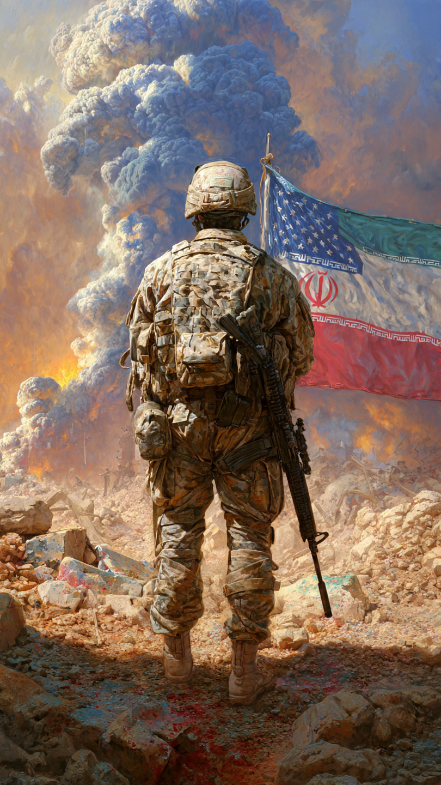
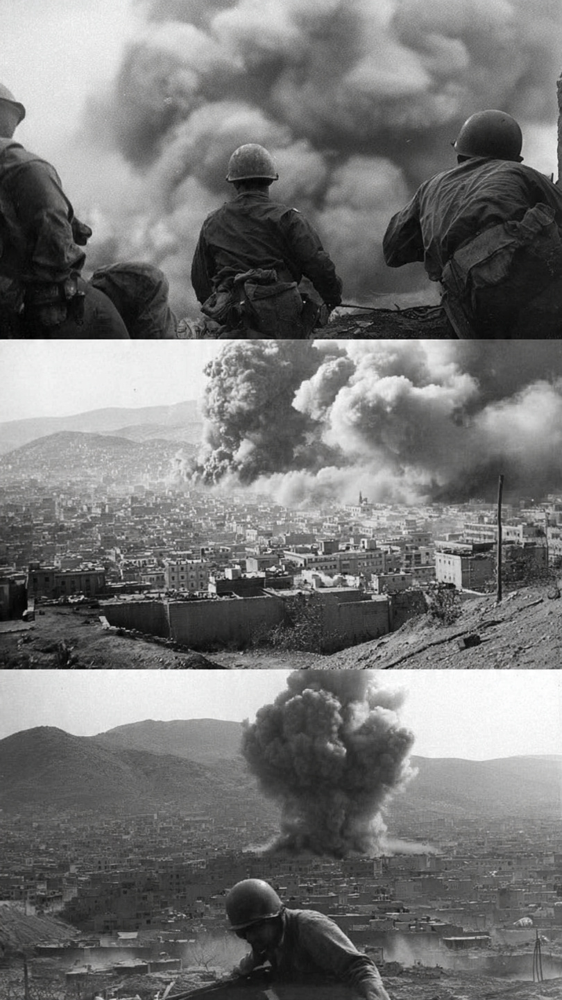
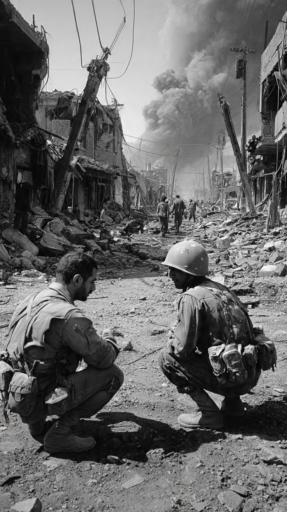
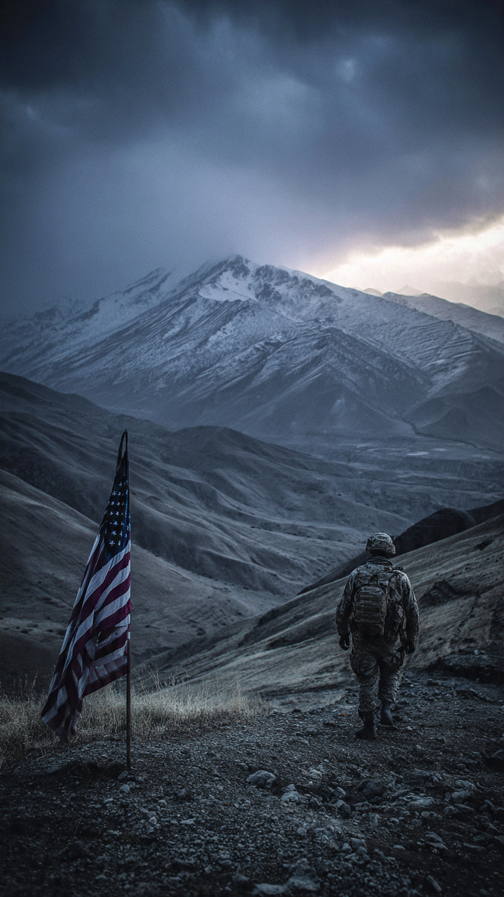
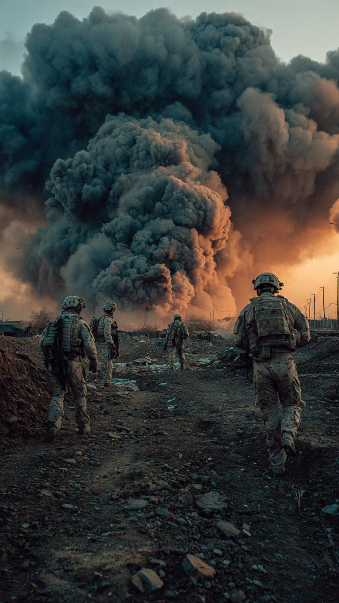

Global Impact, Ceasefire Talks & What Happens Next


The ongoing tensions between the United States and Iran have captured global attention, evolving into one of the most serious geopolitical situations in recent times. What started as strategic disagreements has now escalated into a conflict with far-reaching implications.
Nations across the world are closely monitoring developments, as the situation holds the potential to impact global peace, economic stability, and energy supply chains.

Recent developments indicate a sharp rise in military actions, with key infrastructure becoming targets. Energy facilities have been struck, intensifying the seriousness of the situation. These actions are seen as strategic moves aimed at weakening economic capabilities.
In response, retaliatory strikes have further increased tensions, creating a cycle of action and reaction. This pattern raises concerns about how quickly the situation could spiral into a larger conflict.
Despite the rising tensions, diplomatic efforts are underway to establish a ceasefire. The goal is to bring an immediate halt to hostilities and create space for negotiations. Global leaders are emphasizing the importance of dialogue over confrontation.
A major focus is reopening the Strait of Hormuz, a critical route for global oil transportation. Ensuring its security is essential for maintaining economic balance worldwide.
The effects of this conflict are already visible in global markets. Oil prices have shown volatility due to fears of supply disruption. Countries dependent on imports are especially vulnerable to price increases.
Financial markets are also reacting to uncertainty, with investors shifting strategies to minimize risk. This highlights how geopolitical tensions can influence economies far beyond the conflict zone.
One of the biggest concerns is the possibility of a broader conflict involving multiple nations. Strategic alliances and regional interests make the situation highly sensitive.
Any further escalation could trigger a chain reaction, complicating diplomatic efforts and increasing global instability.
The coming days will be crucial in determining the direction of this conflict. Whether diplomacy succeeds or tensions rise further will shape the global landscape in the near future.
For now, the world continues to watch closely, hoping for a peaceful resolution.

